A bit of the Alhambra Palace's history
The Alhambra (/ælˈhæmbrə/, Spanish: [aˈlambɾa]; Arabic: الْحَمْرَاء, romanized: al-ḥamrāʼ ) is a palace and fortress complex located in Granada, Andalusia, Spain. It is one of the most famous monuments of Islamic architecture and one of the best-preserved palaces of the historic Islamic world, in addition to containing notable examples of Spanish Renaissance architecture
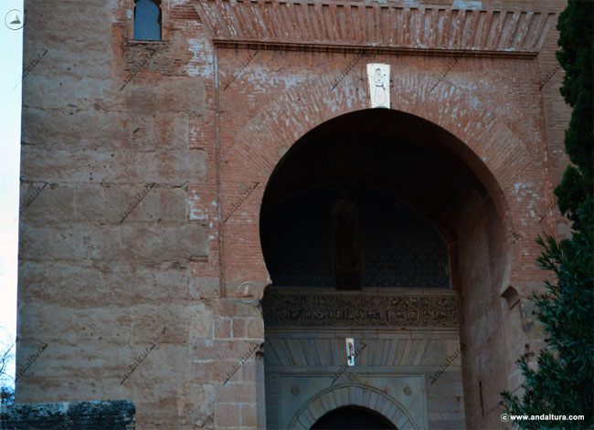The complex was begun in 1238 by Muhammad I Ibn al-Ahmar, the first Nasrid emir and founder of the Emirate of Granada, the last Muslim state of Al-Andalus. It was built on the Sabika hill, an outcrop of the Sierra Nevada which had been the site of earlier fortresses and of the 11th-century palace of Samuel ibn Naghrillah. Later Nasrid rulers continuously modified the site. The most significant construction campaigns, which gave the royal palaces much of their definitive character, took place in the 14th century during the reigns of Yusuf I and Muhammad V. After the conclusion of the Christian Reconquista in 1492, the site became the Royal Court of Ferdinand and Isabella (where Christopher Columbus received royal endorsement for his expedition), and the palaces were partially altered. In 1526, Charles V commissioned a new Renaissance-style palace in direct juxtaposition with the Nasrid palaces, but it was left uncompleted in the early 17th century. After being allowed to fall into disrepair for centuries, with its buildings occupied by squatters, the Alhambra was rediscovered following the defeat of Napoleon I, whose troops destroyed parts of the site. The rediscoverers were first British intellectuals and then other American and Northern European Romantic travelers. The most influential of them was Washington Irving, whose Tales of the Alhambra (1832) brought international attention to the site. The Alhambra was one of the first Islamic monuments to become the object of modern scientific study and has been the subject of numerous restorations since the 19th century. It is now one of Spain's major tourist attractions and a UNESCO World Heritage Site.
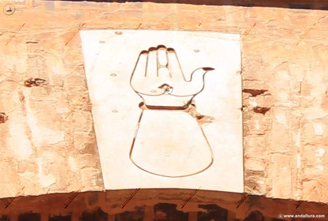During the Nasrid era, the Alhambra was a self-contained city separate from the rest of Granada below. It contained most of the amenities of a Muslim city such as a Friday mosque, hammams (public baths), roads, houses, artisan workshops, a tannery, and a sophisticated water supply system. As a royal city and citadel, it contained at least six major palaces, most of them located along the northern edge where they commanded views over the Albaicín quarter. The most famous and best-preserved are the Mexuar, the Comares Palace, the Palace of the Lions, and the Partal Palace, which form the main attraction to visitors today. The other palaces are known from historical sources and from modern excavations. At the Alhambra's western tip is the Alcazaba fortress. Multiple smaller towers and fortified gates are also located along the Alhambra's walls. Outside the Alhambra walls and located nearby to the east is the Generalife, a former Nasrid country estate and summer palace accompanied by historic orchards and modern landscaped gardens.
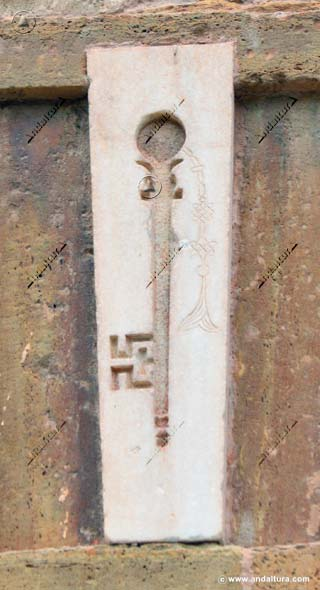The architecture of the Nasrid palaces reflects the tradition of Moorish architecture developed over previous centuries. It is characterized by the use of the courtyard as a central space and basic unit around which other halls and rooms were organized. Courtyards typically had water features at their center, such as a reflective pool or a fountain. Decoration was focused on the inside of the building and was executed primarily with tile mosaics on lower walls and carved stucco on the upper walls. Geometric patterns, vegetal motifs, and Arabic inscriptions were the main types of decorative motifs. Additionally, "stalactite"-like sculpting, known as muqarnas, was used for three-dimensional features like vaulted ceilings.
 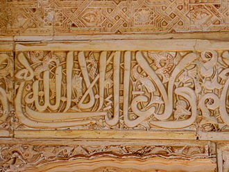
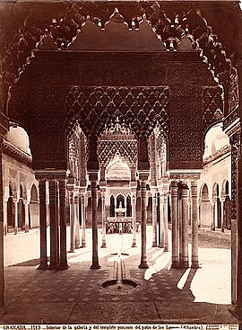
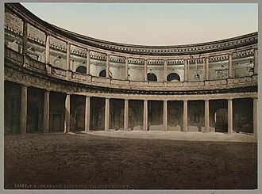
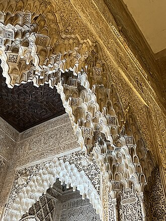
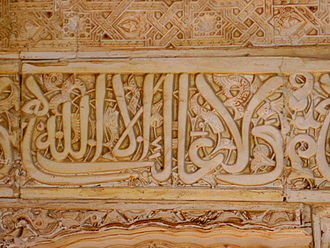
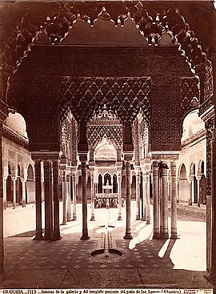
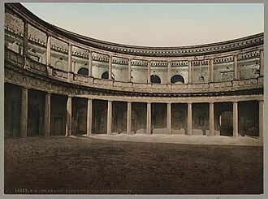
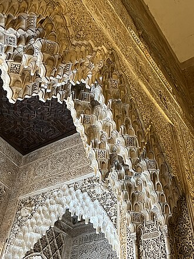
 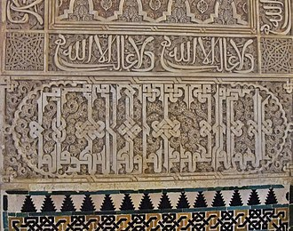
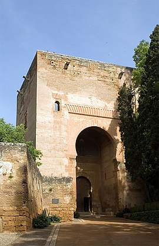
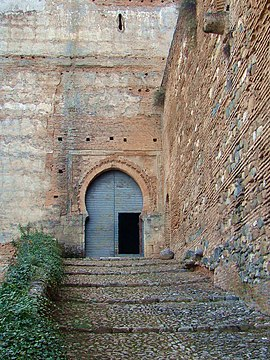
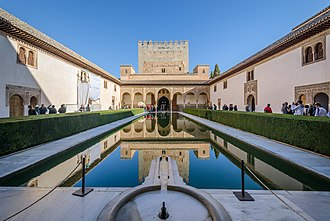
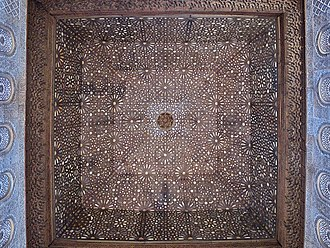
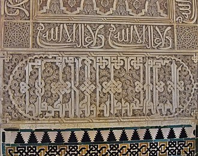
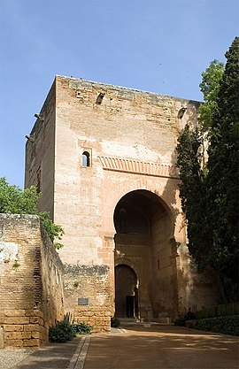
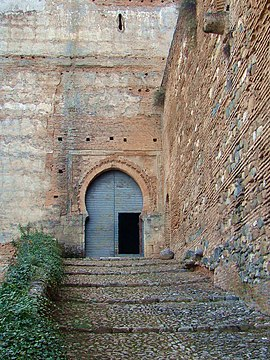
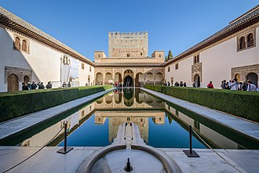
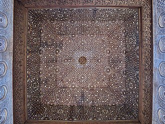